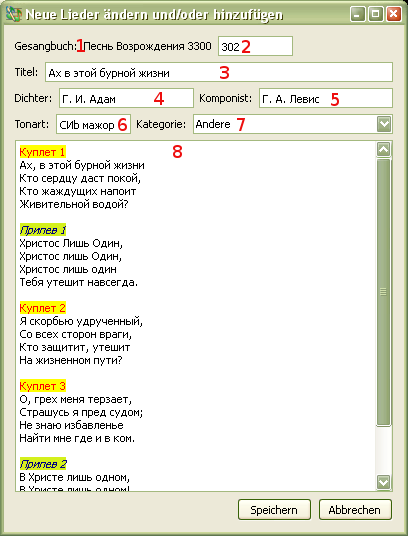

3.2 Bearbeiten der Lieder
Zum Bearbeiten der Lieder:
Es erscheint ein Fenster mit dem vollen Inhalt des Liedes. Abkürz.: Crtl+E
Inhalt des Dialog-Fensters:

- es wird der Name des Gesangbuches angezeigt,
aus dem das Lied gewählt wurde.
- beim Hinzufügen eines neuen Liedes wird eine Nummer automatisch
hinzugefügt. Bei Bedarf kann die Nummer des Liedes geändert werden.
- ein Name des Liedes muss unbedingt vorhanden sein,
andernfalls kann das Lied nicht gespeichert werden. Alle nicht alphabetisch-nummerische Zeichen
werden automatisch entfernt.
- hier wird der Name des Dichters eingetragen.
- hier wird der Name des Komponisten eingetragen.
- hier wird die Tonart des Liedes eingetragen.
- hier wird eine Kategorie aus dem Inhaltsverzeichnis gewählt.
- Der Text muss richtig formatiert werden.
Siehe hier.